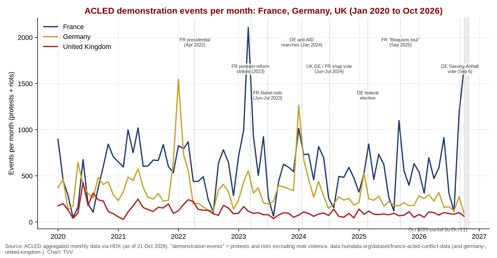
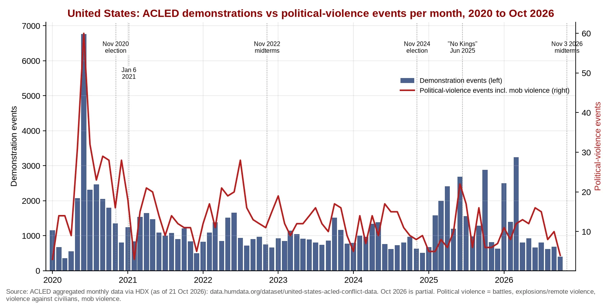
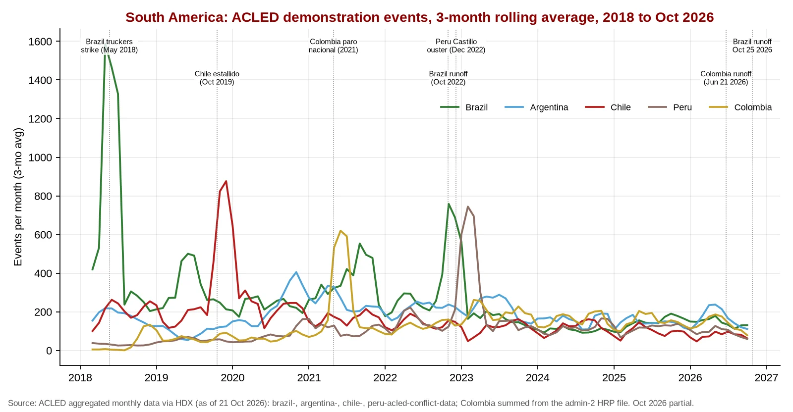

Q1. The Data Picture: Protest Waves Are Trigger-Driven, Not Calendar-Driven

Graph 1. France, Germany, UK: monthly demonstration events (ACLED), Jan 2020 to Oct 21, 2026. France logged 1,181 events in September and 1,676 in Oct 1-21 (partial), against a record 2,108 in March 2023 (pension reform). Germany peaked at 1,548 in January 2022 (Covid-rule protests); the UK peaked at 428 in June 2020. Source: ACLED via HDX (ACLED France data (HDX)), downloaded Oct 21, 2026.
Graph 1 makes the central point. France’s protest count is structurally higher than Germany’s or the UK’s and moves in waves tied to specific grievances: pensions in 2023, the Nahel riots in mid-2023, and now school conditions, fuel and the cost of living. Germany’s spikes in recent years came from Covid-era rules and the mass anti-AfD marches. The UK series is lower and steadier; its most dangerous episodes (summer 2024, Thetford 2026) were short, local, and set off by events or rumours, not big counts.

Graph 2. United States: demonstrations vs political-violence events (ACLED), 2020 to Oct 21, 2026. Demonstrations peaked at 6,769 in June 2020; in 2026 the high so far is 3,248 (March). Political-violence events (battles, explosions, violence against civilians, mob violence) peaked at 60 in June 2020 and ran at 8-16 a month in 2026. Source: ACLED via HDX (ACLED US data (HDX)). October is partial.

Graph 3. South America: monthly demonstration events by country (ACLED), 2018 to Oct 21, 2026. Brazil’s record is the May 2018 truckers’ strike (3,552 events), Chile’s the October-November 2019 estallido, Colombia’s the May 2021 national strike (1,244). Source: ACLED via HDX (Brazil, Argentina, Chile, Peru country files; Colombia from the admin-level file, ACLED Colombia data (HDX)).